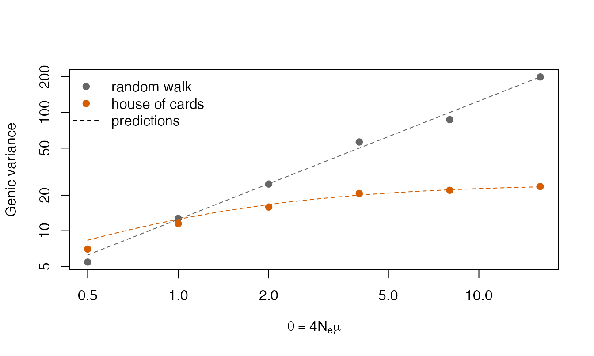
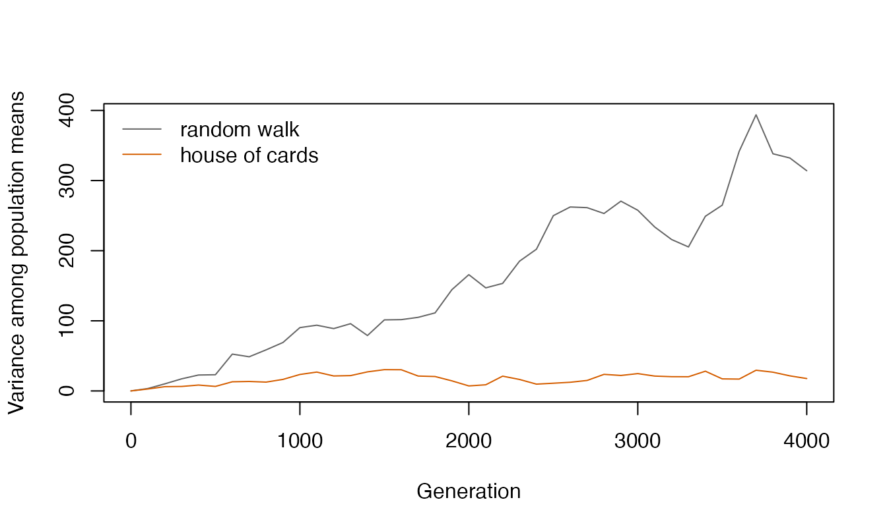
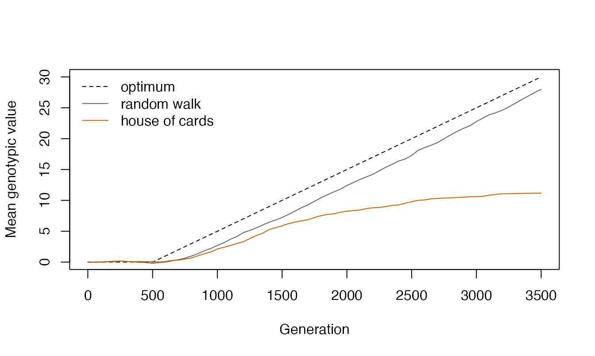

Mutation models: random walk and house of cards
Source:vignettes/mutation-models.Rmd
mutation-models.RmdEvery mutation model in evomod2 has a persistence
parameter: a mutation replaces an allele’s effect \(e\) by
\[e' = \rho\, e + \delta,\]
where \(\rho\) is
persistence and the draw \(\delta\) comes from the model’s mutational
distribution.
-
persistence = 1(the default) is a random walk: mutational effects add up, a new allele resembles its parent, and effects can wander arbitrarily far from the reference genotype. -
persistence = 0is the house of cards model (Kingman 1978; Turelli 1984): a mutation replaces the effect with a fresh draw, unrelated to the old effect, so allelic effects always come from the same distribution.hoc_mutation(rate, cov)is a shortcut. - Values in between pull mutated effects back towards the reference genotype (Zeng & Cockerham 1993).
persistence works with every architecture: it applies to
the effect vectors of additive() and
multilinear(), to \(y\) in
binary_b() (entries of \(B\) still flip), and to the weight and
contribution genes of contribution_matrix().
hoc_mutation(rate = 0.001, cov = 0.5)
#> $type
#> [1] "gaussian"
#>
#> $rate
#> [1] 0.001
#>
#> $cov
#> [1] 0.5
#>
#> $persistence
#> [1] 0
#>
#> attr(,"class")
#> [1] "evomod_mutation"
binary_b_mutation(rate = 0.001, sd = 0.5, rate_b = 0.0001, persistence = 0)
#> $type
#> [1] "binary_b"
#>
#> $rate
#> [1] 0.001
#>
#> $sd
#> [1] 0.5
#>
#> $rate_b
#> [1] 1e-04
#>
#> $b_mutation
#> [1] "flip"
#>
#> $random_state
#> [1] FALSE
#>
#> $persistence
#> [1] 0
#>
#> attr(,"class")
#> [1] "evomod_mutation"The two models differ when allelic effects are far from the reference genotype: under drift, and when selection moves the population away from it.
Drift: variation within and divergence between populations
Without selection, both models reach a balance between mutation and
drift within a population, but a different one. Two allele copies differ
by the mutations on their lineages since their common ancestor. Under a
random walk these add up, so the genic variance grows in proportion to
\(\vartheta = 4 N_e \mu\) (\(L s^2 \vartheta\) for \(L\) loci and mutational standard deviation
\(s\); Lande 1976); under the house of
cards model only whether a mutation happened matters, so the variance
saturates at \(2 L s^2\) (\(2 L s^2 \vartheta / (1 + \vartheta)\)).
\(N_e = n\) for the default
Wright-Fisher life cycle (about \(n /
2\) with moran()):
n <- 200; loci <- 50; s <- 0.5
thetas <- c(0.5, 1, 2, 4, 8, 16)
equilibrium <- do.call(rbind, lapply(thetas, function(th) {
sapply(c(random_walk = 1, house_of_cards = 0), function(pers) {
m <- evomod_model(additive(loci, 1),
mutation(rate = th / (4 * n), cov = s, persistence = pers),
init_sd = s * sqrt(if (pers == 1) th / 2 else th / (1 + th)))
pop <- evolve(m, drift(3000), n = n, record_every = 50, seed = 1)
g <- g_matrices(pop, "genic")
mean(sapply(g[as.integer(names(g)) > 1000], function(x) x[1, 1]))
})
}))
matplot(thetas, equilibrium, log = "xy", pch = 19, col = c("grey40", "#D55E00"),
xlab = expression(theta == 4 * N[e] * mu), ylab = "Genic variance")
curve(loci * s^2 * x, add = TRUE, col = "grey40", lty = 2)
curve(2 * loci * s^2 * x / (1 + x), add = TRUE, col = "#D55E00", lty = 2)
legend("topleft", c("random walk", "house of cards", "predictions"),
col = c("grey40", "#D55E00", "black"), pch = c(19, 19, NA), lty = c(NA, NA, 2), bty = "n")
(Single populations; the package tests check the house of cards equilibrium for both life cycles with more precision.)
What a random walk leaves unbounded is the population mean: replicate populations drift apart forever, with the variance among their means growing linearly in time. Under the house of cards model the mean stays within the range of the mutational distribution:
divergence <- sapply(c(random_walk = 1, house_of_cards = 0), function(pers) {
m <- evomod_model(additive(loci, 1), mutation(rate = 1 / (4 * 100), cov = s, persistence = pers))
means <- sapply(1:12, function(r)
trait_means(evolve(m, drift(4000), n = 100, record_every = 100, seed = 100 + r))$mean_x)
apply(means, 1, var)
})
gens <- seq(0, 4000, by = 100)
matplot(gens, divergence, type = "l", lty = 1, col = c("grey40", "#D55E00"),
xlab = "Generation", ylab = "Variance among population means")
legend("topleft", c("random walk", "house of cards"), col = c("grey40", "#D55E00"),
lty = 1, bty = "n")
Stabilizing selection around the reference genotype
When the optimum is at the reference genotype, the alleles that segregate have small effects, so the old effect matters little and both models maintain about the same genetic variance:
stab <- sapply(c(random_walk = 1, house_of_cards = 0), function(pers) {
m <- evomod_model(additive(50, 1), mutation(rate = 0.0005, cov = 1, persistence = pers),
env_sd = 1)
pop <- evolve(m, stabilizing(3000, omega = 20), n = 500, record_every = 100, seed = 2)
v <- variances(pop)
mean(v$G[v$generation > 1500])
})
round(stab, 2)
#> random_walk house_of_cards
#> 2.29 2.06A moving optimum: tracking or stalling
Under directional selection the population has to move away from the reference genotype. With a random walk, mutations build on the alleles that selection already favoured, and the population tracks the optimum. Under the house of cards model every mutation starts again from the same distribution: going further needs ever rarer alleles from its tail, and the response stalls:
moving <- list(stabilizing(500, omega = 20),
directional(3000, delta_theta = 0.01, omega = 20))
track <- lapply(c(random_walk = 1, house_of_cards = 0), function(pers) {
m <- evomod_model(additive(50, 1), mutation(rate = 0.0005, cov = 0.05, persistence = pers),
env_sd = 1)
trait_means(evolve(m, moving, n = 500, record_every = 50, seed = 3))
})
plot(track$random_walk$generation, track$random_walk$theta, type = "l", lty = 2,
xlab = "Generation", ylab = "Mean genotypic value")
lines(track$random_walk$generation, track$random_walk$mean_x, col = "grey40")
lines(track$house_of_cards$generation, track$house_of_cards$mean_x, col = "#D55E00")
legend("topleft", c("optimum", "random walk", "house of cards"),
col = c("black", "grey40", "#D55E00"), lty = c(2, 1, 1), bty = "n")
How far a house of cards population can go depends on the width of the mutational distribution relative to the distance to travel; with long directional runs, such as those of Melo & Marroig (2015), the choice of mutation model is part of the hypothesis being tested.
References
Kingman, J. F. C. (1978). A simple model for the balance between selection and mutation. Journal of Applied Probability, 15, 1-12.
Turelli, M. (1984). Heritable genetic variation via mutation-selection balance: Lerch’s zeta meets the abdominal bristle. Theoretical Population Biology, 25, 138-193.
Lande, R. (1976). Natural selection and random genetic drift in phenotypic evolution. Evolution, 30, 314-334.
Zeng, Z.-B., & Cockerham, C. C. (1993). Mutation models and quantitative genetic variation. Genetics, 133, 729-736.